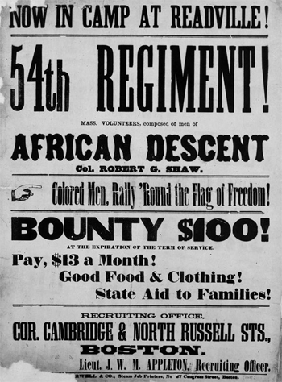

|
In the early years of the war, when blacks and their abolitionist allies first
petitioned for the recruitment of black freemen and slaves in the Union army,
they gave little consideration to the question of treatment after muster. Black
military service offered the opportunity to strike a blow against slavery and to
lay the groundwork for the reconstruction of the Republic on the basis of racial
equality. Drawn by these heady possibilities and forced to fend off imputations
of black docility and cowardice, pro-enlistment strategists did not foresee that
military service would itself bear the stain of inequality they hoped to
eradicate.'
Blacks understood that they had a special interest in the war's outcome that
white soldiers could not claim. Nonetheless, they expected to share every
material aspect of soldierly life on an equal footing with whites. The first
recruiters of black troops--notably Senator James H. Lane in Kansas, General
Benjamin F. Butler in Louisiana, and Generals David Hunter and Rufus Saxton in
South Carolina--promised such equality, as did Massachusetts Governor John A.
Andrew. On the basis of Andrew's reported assurances from Secretary of War Edwin
M. Stanton, the governors of Connecticut, Rhode Island, Ohio, and other Northern
states made similar promises. The federal government ultimately violated
virtually every pledge of equal treatment, but no transgression caused as much
hardship or so blatantly insulted the dignity of black soldiers as the policy of
discriminatory pay.
The general poverty of the black community made the pay question an
especially sensitive issue. Most Northern freemen toiled as day laborers and
owned little property. Probably many had never earned more than the $13 per
month, plus clothing allowance, that the army offered white volunteers. Newly
emancipated slaves were even more impoverished, since few escaped bondage with
more than the clothes on their backs. Thus black soldiers needed regular wages
to support themselves and their families, and a few extra dollars a month could
mean the difference between subsistence and destitution. Although few blacks
enlisted solely for the money, their expectation of soldiers' wages reinforced
their aspiration for equality. Poverty and principle proved an explosive
mixture.
Under such circumstances, black soldiers felt betrayed by the War
Department's decision early in dune 1863 to pay them three dollars less per
month than white soldiers, and to deduct from the remaining ten dollars an
additional three dollars for clothing. In justifying its policy, the War
Department cited recent congressional legislation. Two 1862 acts, the Militia
Act and the Confiscation Act, authorized the President to use blacks in national
service, but only the former fixed a standard of pay. Reasoning that black
enlistments fell under the provisions of the Militia Act, which expressly
authorized black military service, rather than the Confiscation Act, which
applied more generally to any employment of contrabands, the department decided
to pay the soldiers $10 per month as stipulated by the former. The department
ignored its own pledges of equal pay, as well as those of Hunter, Butler,
Andrew, and others. The War Department also overlooked the March 1863 Enrollment
Act's guarantee of pay on a par with volunteers for drafted men, even though
some Northern blacks were being drafted. The meager army pay appeared all the
more inequitable because black civilians working for military departments could
earn as much as $25 monthly by virtue of the Confiscation Act's omission of pay
restrictions.
The government's default on its pledge to pay black recruits at the same rate
as whites deeply insulted black soldiers and their officers. It challenged their
rights as citizens at a time when they assumed that military service would
affirm racial equality. It revealed starkly that racial prejudice pervaded
Northern as well as Southern society. The pay question generated an awareness
that black soldiers had to fight two wars: one against Southern secession, the
other against Northern discrimination.
The decision to pay black soldiers according to the restrictive provisions of
the Militia Act fell with special intensity upon black noncommissioned officers.
Promotion above the rank of private earned them no added monthly pay; they
received only the $10 specified by the Militia Act for all black soldiers.
Meanwhile, white privates and corporals earned $13 per month; company sergeants,
$17; first sergeants, $20; and regimental sergeants, $21. The white officers who
organized and commanded black regiments lamented the stultifying effect of
uniform pay for blacks upon the development of a black noncommissioned officer
corps. Black men in the noncommissioned ranks not only shared that perspective,
but also felt the sting of the discriminatory pay provision in monetary terms
and smarted at the knowledge that the highest-ranking black sergeant earned less
than a white private. Like all black soldiers, they condemned the policy that
consigned them to inferior status purely on account of their ancestry. Taking
advantage of their wider literacy, black noncommissioned officers penned
memorials that swelled the larger chorus of protests emanating from the black
enlisted ranks.
|

From the beginning, soldiers were recruited into
the army with promises of the same $13 a month pay as given to
white soldiers. It took a long time before they actually did
receive equal pay, however.
|
The War Department's decision also affected the black commissioned officers
serving in the Department of the Gulf. Though General Nathaniel P. Banks
maneuvered to eliminate them from the officer corps, he permitted black officers
to draw the same pay as their white counterparts as long as they remained in
service. When the War Department announced its policy of paying all blacks only
$10, black officers sent an indignant protest to the Secretary of War, but the
lower rate stood. The War Department similarly refused black surgeons and
chaplains payment on a par with whites of the same rank. Like all blacks
affected by the policy, surgeons and chaplains denounced discriminatory
treatment.
The 54th Massachusetts regiment, recruited from all over the North by
Governor Andrew on the promise of equality, sprang to action first. Sent to
South Carolina in May 1863 for service under the sympathetic General Hunter, the
regiment by July still had nor received any pay whatsoever. Colonel Robert G.
Shaw, who would die in the 54th's assault on Fort Wagner late in July, informed
Governor Andrew at the beginning of the month that he would prohibit paymasters
from distributing the inferior $10 compensation. Rather, he demanded that his
men be mustered out of service. After they had proved their mettle at Fort
Wagner, the men themselves also refused to accept discriminatory pay. They
further rejected Andrew's offer to use state funds to make up the difference
between what he had promised and what the War Department offered. Most felt
insulted that should think their objection a matter of money rather than of
principle. A deputation from the governor in December 1863 could not shake the
men's determination, and they reaffirmed their resolve to accept nothing less
than equal pay from the War Department.
The Massachusetts soldiers' protest began as a result of the betrayal of the
promise of equal pay made at the time they enlisted. As vast numbers of black
volunteers entered the service during the second half of 1863, they, too, viewed
the matter of discriminatory pay as a stigma of inferiority and protested
against it. Yet no black soldiers matched the level of opposition expressed by
the early regiments. Like the Northern units, the South Carolina regiments had
enlisted under express War Department guarantees of equal pay,s and, even more
galling, they had drawn at least one payment at the regular volunteer rate
before the lower pay standard for black troops went into effect. Not
surprisingly, then, opposition to the discriminatory pay policy centered in the
South Carolina Sea Islands, where both the Massachusetts and South Carolina
black regiments served. As the Massachusetts protest intensified during the
summer and fall of 1863, the South Carolina troops kept pace. Laying specific
claim to Secretary of War Stanton's written promise of equal pay, they and their
officers petitioned the War Department to reinstate the equal rate of $13 per
month. When the War Department did not satisfy the claim, they too took a
principled stand and refused to accept the $1O offered them.
Their principles proved expensive. Soldiers daily received letters describing
the hardships their families endured. Many learned of kin lodged in poorhouses
for want of money to support themselves. Such reports shortened tempers and
fueled unrest. For a time during the fall of 1863, the Massachusetts men
teetered on the brink of mutiny, and only the most strenuous efforts of their
officers averted violence. While freeborn Northerners threatened precipitate
action, former slaves in the 3rd South Carolina Volunteers pressed their case to
the limit. In mid-November 1863, led by Sergeant William Walker, the men of one
company stacked their arms before the tent of their regimental commander,
Colonel Augustus G. Bennett, and refused to do any further duty until the pay
matter was settled in their favor. They adamantly refused to heed Bennett's
warning that their action constituted mutiny, punishable by death. Despite his
sympathy for their cause, Bennett formally charged the men with mutiny, and in
February 1864 a firing squad executed Sergeant Walker in the presence of his
entire brigade.
Northern black troops felt especially betrayed by the inferior pay policy,
and they too protested their discriminatory pay. Michigan soldiers stationed on
the Sea Islands in close proximity to the Massachusetts and South Carolina
regiments also adopted the tactic of refusing to accept discriminatory pay.
Farther away, on the coast of Texas, the only Rhode Island black regiment, the
14th Heavy Artillery, followed the same course and in March 1864, their protest
ended in tragedy. After the men of one company refused to accept their pay,
their commander court-martialed some two dozen noncommissioned officers and
privates. Ensuing sentences of imprisonment for as much as one year at hard
labor generated seething unrest, which soon erupted in a confrontation between a
white lieutenant and a black enlisted man. The lieutenant killed the man on the
spot; the regimental commander sustained the officer's action without even a
reprimand and placed all the enlisted men under close guard until they
capitulated. As long as it remained unsettled, the pay issue exposed and
aggravated the entire range of discrimination that blacks experienced in the
military and heightened the militancy of black soldiers.
Support from high-ranking officers helped sustain the protest in some
regiments and forestalled prosecution of larger numbers of angry soldiers.
Technically, refusal to accept pay constituted mutiny, which, as both the Walker
case and that of the 14th Rhode Island Artillery demonstrated, could meet
summary and deadly punishment. Fortunately for the men of their regiments,
commanders Robert G. Shaw and Edward N. Hallowell of the 54th Massachusetts,
Norwood P. Hallowell and Alfred S. Hartwell of the 55th Massachusetts, James M.
Williams of the 1st Kansas Colored Volunteers, and Thomas W. Higginson of the
1st South Carolina Volunteers, as well as Lane and Andrew, all came from
abolitionist backgrounds. Similarly, Generals Hunter, Saxton, and Butler had
been antislavery men. Furthermore, most regimental commanders, regardless of
their backgrounds and despite their opposition to certain tactics of the
protesters--endorsed the principle of equal pay. Without such allies, the
soldiers' protest would have been arrested at the outset with a few exemplary
executions.
In their tenacious pursuit of equality, black soldiers made the pay issue a
symbol of the larger struggle for racial justice. Their cause sparked wide
reaction throughout the North, mobilizing the entire spectrum of abolitionist
opinion, as well as the sympathy and organized efforts of free black
communities, in defense of equality. The protest spread as black enlistments
escalated. By late 1863, all quarters joined the protest against discriminatory
pay. In his annual report to the President in December 1863, even Secretary of
War Stanton recommended that Congress remove the binding restrictions of the
Militia Act so that black soldiers could collect the same pay as whites.
Struggling to settle an issue so potentially explosive, Congress cast about
for a solution that would extricate it from the contradictory provisions of the
Confiscation and Militia Acts and at the same time offer a measure of justice to
black soldiers. In the spring and early summer of 1864, the spirit of
insubordination again arose as black soldiers throughout the South, especially
the Massachusetts regiments stationed in South Carolina, lost patience with
congressional dawdling on the pay issue. While their superiors threatened harsh
punishment for insubordinate acts, Colonels Hallowell of the 54th and Hartwell
of the 55th reiterated Colonel Shaw's earlier plea to have the men mustered out
of service if the government abrogated its contractual obligation of equal pay,
and Hartwell left on a special mission to Washington to plead the case of the
black soldiers. In mid-June 1864, Congress at last responded, passing a military
appropriations bill that authorized equal pay for all black soldiers retroactive
to January 1, 1864, and continuing thereafter. In an attempt to settle the
claims of the Northern regiments, the law makers also ruled that all black
soldiers free on April 19, 1861, when the war began, were entitled to receive
the pay allowed by law at the time of their enlistment, leaving to the Attorney
General the determination of the applicable law. In July 1864, Attorney General
Edward Bates ruled that the restrictive Militia Act did not govern the case of
the free black soldiers and that the Confiscation Act--by virtue of its absence
of pay constraints--provided for pay equal to that of white soldiers, that is,
$13 per month. At the beginning of August, the War Department implemented
Bates's ruling and ordered regimental commanders to ascertain, by administering
an oath, who of their men had been free at the start of the war. The "Quaker
Oath" devised by Colonel Edward N. Hallowell of the Massachusetts 54th, simply
required black soldiers to swear that at the start of the war "no man had the
right to demand unrequited labor of you."
The congressional action began to defuse the pay issue, and the 54th and 55th
Massachusetts regiments held an ecstatic celebration of their victory. But the
freemen's sweet success had a bitter taste to soldiers who had been slaves when
the war began. They deeply resented the April 19th clause. The South Carolina
regiments--those with the strongest case for equal pay--took no pleasure in seeing
their claim annihilated on an arbitrary technicality. Hence they continued to
press their demand, refusing to accept any pay for another nine months.
In a March 1865 enrollment act, Congress finally acknowledged Stanton's
August 1862 order to Saxton as contractually binding on the War Department and
recognized as legitimate the claim to equal pay from day of enlistment of the
South Carolina regiments. The legislation also empowered the Secretary of War to
decide similar cases on an individual basis. Three months later, in reply to a
petition from the Kansas officers, the department ruled against Lane's regiment,
presumably on the grounds that Lane lacked proper authority to offer equal pay
at the time he organized the regiment. That decision closed the Kansas soldiers'
case.
By virtue of its policy of inequality, the Union government inadvertently
enriched the black military experience. Unequal pay incited black soldiers to
challenge discrimination with the same vigor and determination they used to
fight slavery. The issue united soldiers of various backgrounds in a common
struggle, even though it did not necessarily abolish perceived differences
between freeborn and slaveborn. The struggle produced leaders from among the
ranks and captured the support of Northern black communities and segments of
white public opinion, both in Washington and throughout the North. In turn, the
protest, and its largely successful outcome, shaped the thoughts and actions of
black soldiers returning home to commence a new struggle for freedom.
Source: Freedmen and Southern Society Project, Freedom, A
Documentary History of Emancipation, 1861-1867 (New York: Cambridge
University Press, 1985), 363-68.
|